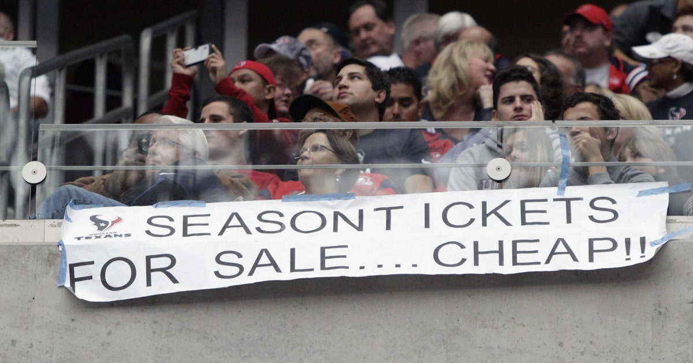

Welcome to Page 3
This is the third page of your website. It contains some text and at least one more image.

For a quick jump back to Page 1, click here.
The offseason leading into the 2023 NFL season was full of uncertiany and excitment. This was due to the massive new talent aquisitions and Head Coach, Demeco Ryans. With his expertise and past successes The Houston Texans are very excited to have a new Head Coach who knows what a winning formula takes. One main Component Ryans has prioritized has been the additions of new and improved talent within the team, and this was evident within the Free Agent Market and NFL Draft. A various number of key additions were made this Free Agency Period, but the Houston Texans' NFL draft was where absolutely franchise altering choices were made.
A blockbuster trade to aquire not only one bluechip player, but two. CJ Stroud, QB from Ohio State and Will Anderson, Defensive End from Alabama were the 2nd and 3rd overall selecctions, both made by The Houston Texans. These two rookies have been nothing short of amazing this year, especially CJ Stroud as he is looking at the greatest rookie Quarterback season ever, a massive and amazing fact. CJ's maturity and talent is well beyond his years and he has cemented himself as one of the best Quarterbacks within the NFL. Will Anderson on the other hand, has appeared as much more of project type of player. His talent and impact displays pure promise and dominance, however his transition to the NFL has been dissapointing at times, due to the lack of production. Regardless of the lack of production, the potential is remarkable.
These changes within the franchise have made the fanbase beyond elated and excited for the future, as currently the Texans sit at a record of 5-3, with almost double the wins midway through the season as many Houston has throughout the entire season in 2022. This had brought immense hope and promise all throughout Houston as it looks that The Texans will turn into a dominant and powerful team.
For more details, click here to jump to Page 2.
The Houston Texans have faced several challenges and shortcomings throughout their history. One significant area of struggle has been the inconsistency in quarterback performance. Despite having talented players at the position, the team has often grappled with quarterback transitions and the quest for a stable franchise quarterback. This instability has impacted offensive production and, at times, hindered the team's ability to make deep playoff runs. The Texans have experienced multiple changes in leadership, including coaching staff and front-office personnel, contributing to the team's difficulties in finding a sustained winning formula.
Another notable shortcoming for the Texans has been their defensive struggles in certain seasons. While the team has had standout defensive players, including J.J. Watt, maintaining a consistently dominant defense has been a challenge. Injuries to key defensive players and roster turnover have occasionally led to defensive lapses, affecting the team's overall competitiveness.
Off-field issues have also played a role in the Texans' challenges. Contract disputes, trade requests, and legal matters involving star players, most notably the situation with Deshaun Watson, have created distractions and uncertainties that impacted the team's focus and cohesion. These off-field challenges have contributed to a turbulent period for the franchise, impacting both performance on the field and the overall team environment.
For more details, click here to go to Page 3.
This is the third page of your website. It contains some text and at least one more image.
For a quick jump back to Page 1, click here.